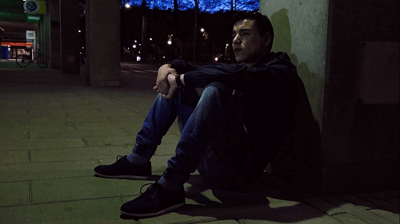
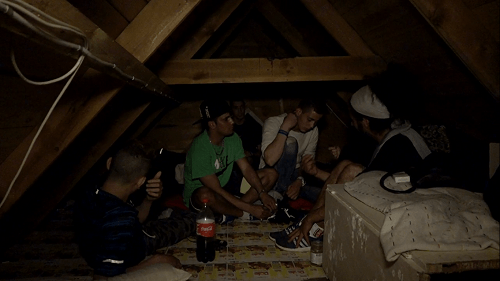

< < < Back
Moroccan Minors Now Live On The Streets Of Sweden – Return Of Kings
Several hundred Moroccan children live on the streets of Sweden, reports the investigative journalism TV program Uppdrag granskning (Mission Investigation). Their main sources of income are drug dealing and theft.
Since these kids don’t have any adults in Morocco to take care of them, it’s impossible for Sweden to deport them. Meanwhile, the number of migrants flooding Europe is rising.
Desperate youths
Increasingly more Moroccan boys, some of them as young as 9, are coming to Sweden. They live on the streets and avoid the authorities for fear of deportation. Their parents are either dead or very poor.
In Stockholm City alone, police say there are up to 200 Morrocan youths. But no one knows exactly how many there are in the country.
The reporters of Uppdrag granskning followed a few of the boys for months, documenting their dire situation. Footage show the youths sleeping at Stockholm Central Station, on benches and stairwells. In the summer, some sleep under bushes around trash and rats. Others find rest in abandoned buildings.
Some of them don’t want their faces shown, and no one wants to give up his real name. They communicate with the reporters via a translator.
Two boys, 14 and 17 years old, say they move from country to country in Europe, staying away from authorities. They say they want to work, to “have a future.” But so far their lives have been spent on the street.
Even though the Swedish authorities try to locate the boys and give them shelter and food, they don’t want any help. They have no trust in authorities. One of the boys says, “no one can help me, only God.”

A 14 year old Moroccan.
About 1,000 Moroccans under the age of 18 have sought asylum in Sweden since 2011. Less than five percent of them have received residence permits, on account of there being no armed conflict going on in Morocco.
Despite that, only two Moroccan minors have been deported since 2011. According to Swedish law, minors can’t be deported if there’s no adult in their home country to take care of them.
A boy who has obviously spent a long time in Sweden, since he knows some Swedish, says, “we get no money, we get nothing. They say we’re criminals, what else can we do?” Then he blatantly admits to selling drugs.
I don’t want to live on the streets like the Romanis. I want money, I want to have a family. I want a good life. If I sell drugs, I get money for me and my family.
An anonymous police officer speaks out on the prospects of these youths:
If you live in this environment, it’s hard to come back to a regular social life. […] These are children who live on the street, and they are being used by older criminals. We have seen youths who have committed burglary to support themselves. They sell drugs, commit pickpocketing and theft. They do it to stay alive.
One of the boys says that some of them get so desperate, they have sex with grown men for money.
Irresponsible parenting
It seems today that Europe has become the dumping ground for the world’s poor and downtrodden. It is certainly difficult to see how this in any way improves Western countries.
Leftists would glorify them, like they always glorify the poor “working class.” But these Moroccan boys are clearly anything but saints.
Their drug peddling and stealing will serve to make Sweden a less safe place. The historically high social capital of this society will diminish as people feel the need to check their pockets now and then to see if anything is missing.
Yet the migrant Moroccans really don’t have any other option than to become criminals. If a Swede with an education can’t find a job in Sweden, how are these foreign, unskilled kids supposed to compete?

Moroccans taking shelter in an abandoned cabin.
In some sense, you can’t blame then. This is not to say that they shouldn’t be punished for the crimes they commit.
Often when children misbehave, you put the blame on the parents who are supposed to raise them at home. In this case, the boys have no home. They are forced to raise each other, and all they know is life on the streets.
Moroccan parents are not taking responsibility for their children. But isn’t it odd that the people that have the least resources to take care of their offspring, the people who live in the worst possible conditions in the world, are the ones that have the most children?
Maybe it’s not odd at all; every human being has needs. But wouldn’t it with be so much better for everybody, if these people thought to themselves, “hey, since I earn almost no money at all, and can barely feed myself, and since there’s probably some machete wielding guy behind that bush waiting to decapitate me and the rest of my tribe, perhaps it wouldn’t be such a bad idea to stop having unprotected sex, at least until my situation improves somewhat.”
Solutions
There are only two ways to solve the issue of Moroccan hoodlums coming to Sweden.
The first option is to keep doing what is already being done—letting these youths in and offering them help that they won’t accept. In the long run, though, this situation will probably make more and more Swedes lean toward the second option.
That means closing the borders. On the one hand it would keep unwanted migrants from entering the country; only letting in people with qualifications that the labor market needs. On the other hand, having border controls means Sweden would no longer be a part of the Schengen Area. Sure, it would be a great undertaking, but who said solving this issue would be easy?
Read More: Freedom Of Speech Is Dying In Sweden